On 25-26 September 2024, engineers, researchers and simulation specialists from across Europe and Japan gathered in Frankfurt, Germany for PW Experience 2024, the annual conference dedicated to particle-based simulation with Particleworks and Granuleworks. Over two packed days, eleven presentations demonstrated that MPS-based meshless CFD is no longer an emerging curiosity — it is a production tool delivering validated results across gearbox lubrication, electric powertrains, turbomachinery, food processing, hydropower and advanced manufacturing.
The event brought together a cross-section of the simulation community: OEMs, Tier 1 suppliers, academic researchers and software developers, all sharing real-world results and hard-won correlation data. Here is what stood out.
Keynote: The Science Behind the Software
Prof. Seiichi Koshizuka of the University of Tokyo opened the conference with a keynote tracing the spiral development of the MPS method — a collaborative loop between users, vendors and universities. He presented recent advances in high-order schemes, variable spatial resolution, surface tension modelling and multi-phase flow treatment, giving the audience a clear view of the research pipeline feeding into future Particleworks releases.
Shun Fujimoto of Prometech Software followed with a detailed overview of the new features in Particleworks 8.1 and Granuleworks 3.1, connecting the academic advances directly to the tools engineers use daily.
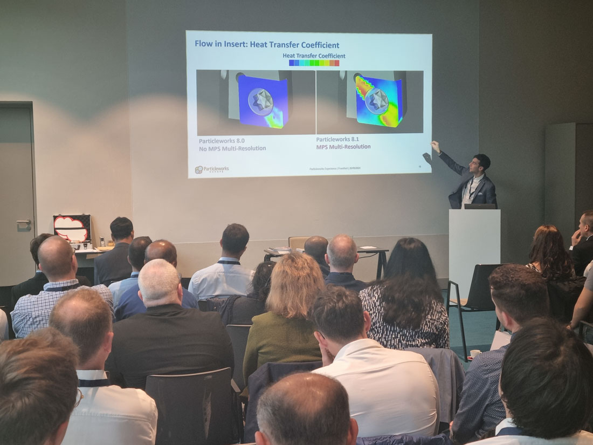
Gearbox and Drivetrain Lubrication: From Correlation to Virtual Optimization
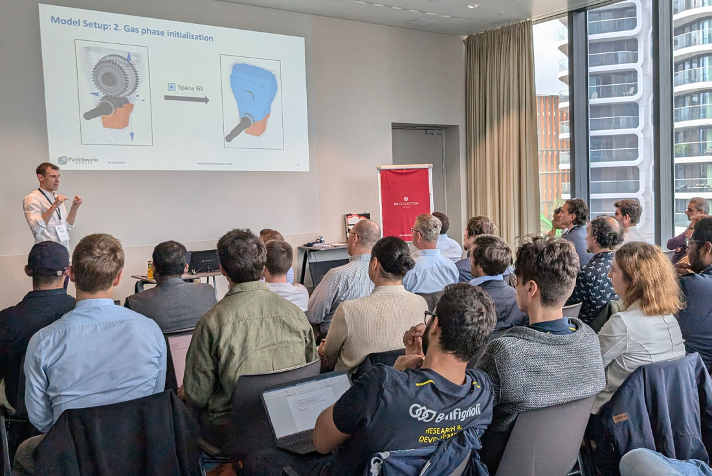
Lubrication simulation continues to be the largest application area for Particleworks in Europe, and this year's presentations showed the field maturing from feasibility studies to validated, production-level workflows.
Fabien Malcoiffe of Valeo presented correlation activities on eDrive reducer lubrication models, demonstrating that simulation results have reached a correlation level sufficient for virtual optimization — meaning physical prototyping cycles can be shortened and design alternatives explored digitally with reduced lead time. For any engineering manager weighing the investment in simulation infrastructure, this is the headline result: validated models that compress development schedules.
Alberto Arcos of Punch Powertrain showed how Particleworks fits into the broader Product Creation Process for EV drive units. His presentation framed meshless CFD not as a standalone analysis but as a Virtual Prototyping step integrated into the full development chain for next-generation electrical powertrains.
Bearings: Thermal Prediction with Physical Validation
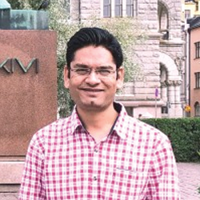
Mehul Pandya and Fabrizio Mandrile of SKF tackled one of the most demanding lubrication problems: predicting lubricant behaviour and temperature distribution inside ball bearings. They compared segregated versus coupled thermal simulation approaches and benchmarked the results against both traditional mesh-based CFD and physical testing. The ability to capture thin-film, high-shear lubricant flows inside a bearing cavity — where conventional meshing struggles — is precisely where particle methods earn their place.
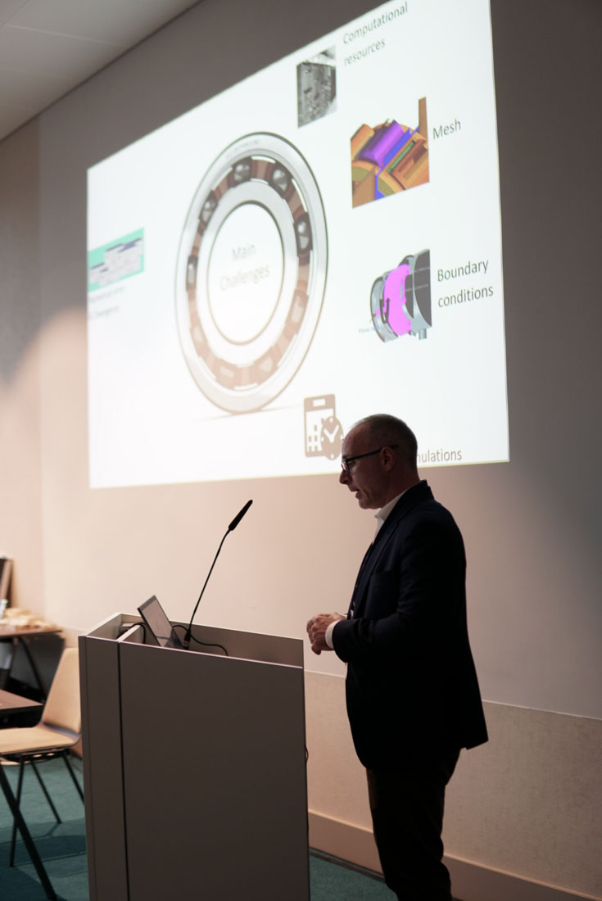
Turbomachinery: Oil-Air Interaction in Sealing Zones
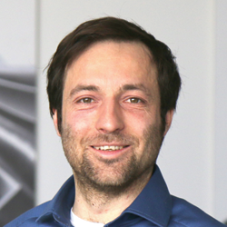
Sebastian Spengler of MAN Energy Solutions presented an investigation of oil and air interactions at the sealing areas of a turbocharger, using a two-way coupled MPS+FVM simulation strategy. The results were verified against demonstrator testing, adding another data point to the growing body of industrial validation for coupled particle-mesh approaches in rotating machinery.
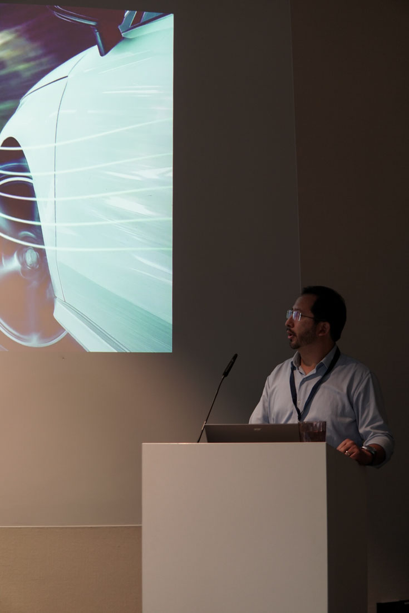
Machine Tool Cooling: Meshless CFD Meets Conjugate Heat Transfer
Michele Merelli and Gianluca Parma of Particleworks Europe introduced a simulation workflow for machine tool cooling, combining meshless CFD with conjugate heat transfer to model high-speed coolant flow impacting rotating cutting tools. The inherently transient, free-surface nature of coolant jets on spinning geometry is a textbook case where particle methods outperform conventional approaches.
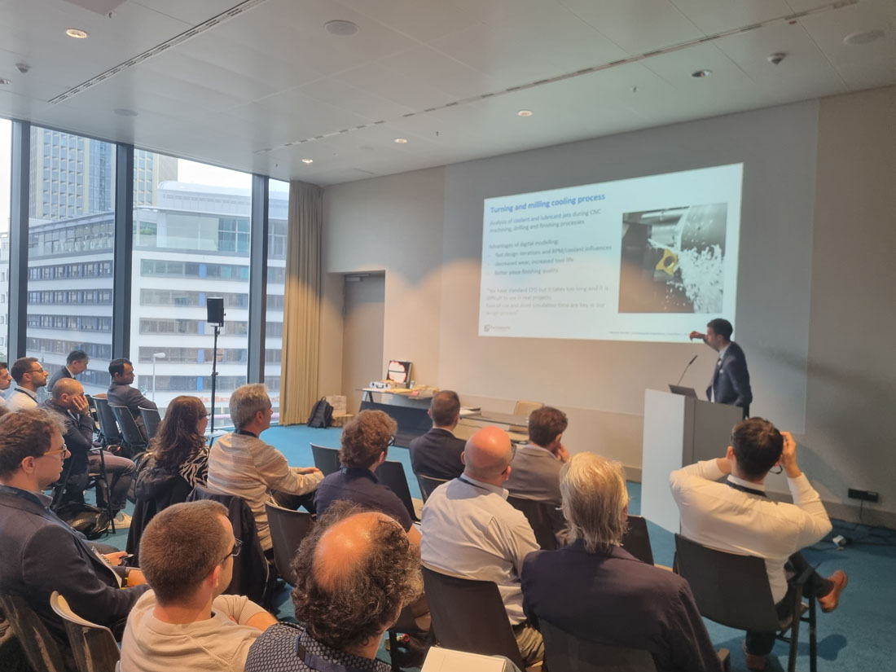
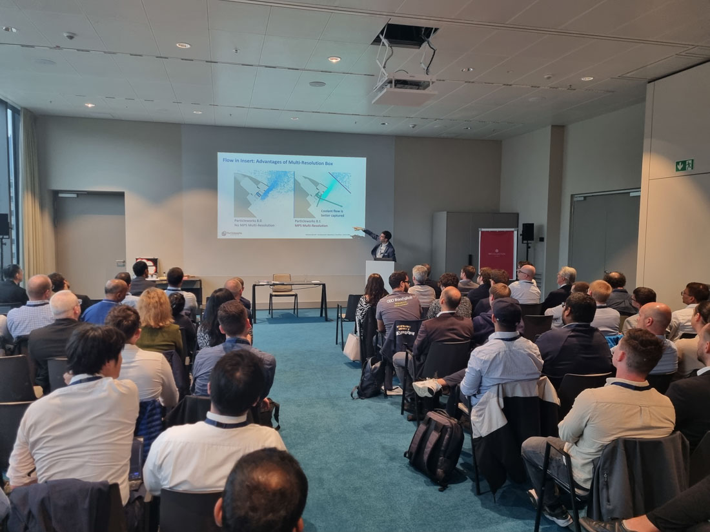
Food Processing: Particles in the Sausage
In one of the conference's most distinctive applications, Marcel Nusser of Handtmann presented a study of flow and particle distribution in meat emulsions during high-performance sausage production. Using DEM+MPS coupling, the simulation captured the behaviour of solid inclusions within a viscous carrier fluid — a problem that matters enormously for product quality and consistency in the food industry but is nearly impossible to address with grid-based methods alone.
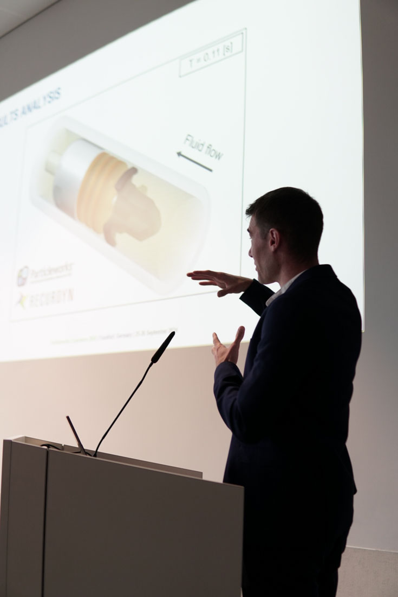
Hydropower: Pelton Turbine Performance at Lower Cost
Jean Decaix of HES-SO Valais/Wallis demonstrated simulation of Pelton turbine performance, modelling the air-water mixture inside the turbine buckets to predict efficiency losses and splitter erosion. Pelton turbines operate in a violently fragmented free-surface regime where traditional VOF methods demand extreme mesh refinement. The particle-based approach delivered actionable performance predictions at significantly lower computational cost.
Advanced Manufacturing and Multi-Physics Coupling
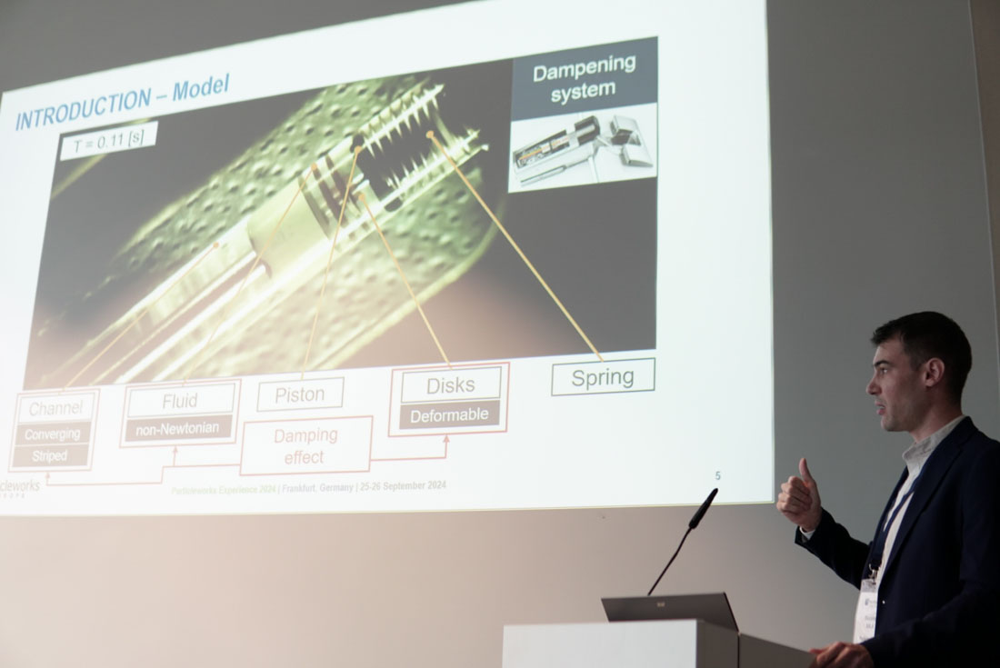
Two presentations rounded out the programme with multi-physics themes. Riccardo Sala of EnginSoft and Uwe Eiselt of FunctionBay presented a two-way FSI coupling between MPS and RecurDyn for soft closure systems, combining fluid simulation with full-flex multi-body dynamics. Satoshi Takeshige of Prometech Software closed the technical sessions with a look at Friction Stir Welding and Friction Stir Spot Welding simulation, extending the particle method into solid-state joining processes for lightweight structures.
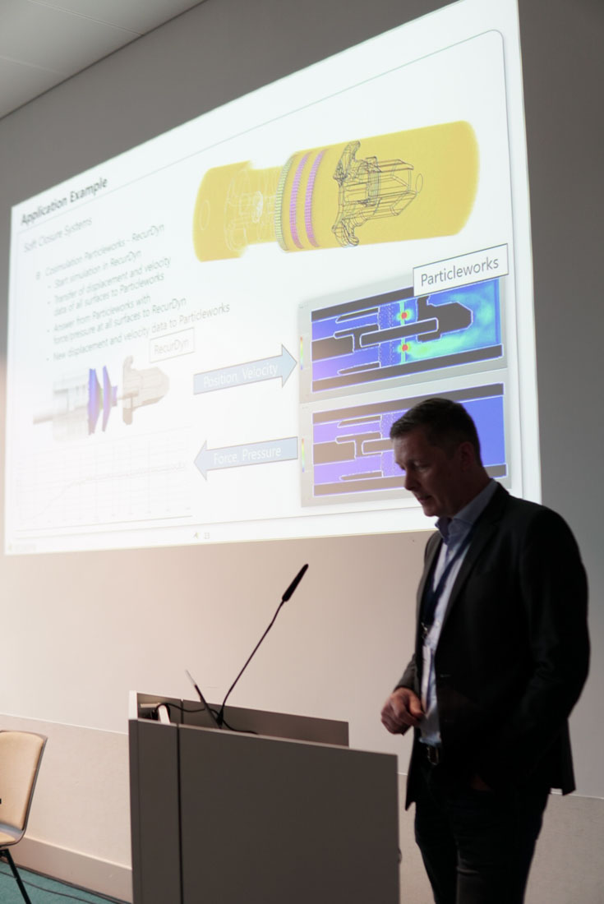
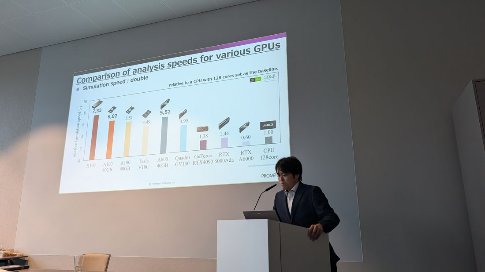
Looking Ahead
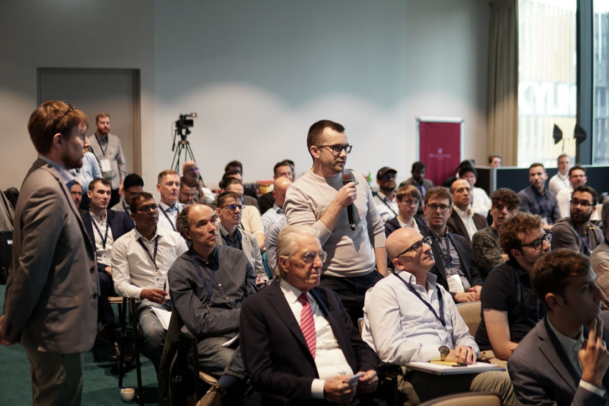
PW Experience 2024 confirmed a clear trajectory. The community around Particleworks is growing — not only in the number of users, but in the depth and rigour of the work being presented. Correlation against physical testing was a recurring theme, and several presenters showed workflows where simulation has moved from a post-design verification step to an active driver of design decisions.
We thank all presenters and attendees for making Frankfurt 2024 the strongest PW Experience to date. The conversations that started in the conference hall will continue in projects across Europe — and we look forward to seeing the next set of results at PW Experience 2025.
Interested in Particleworks?
See how meshless CFD can accelerate your simulation workflows. Request a personalized demo from our engineering team.
Request a Demo